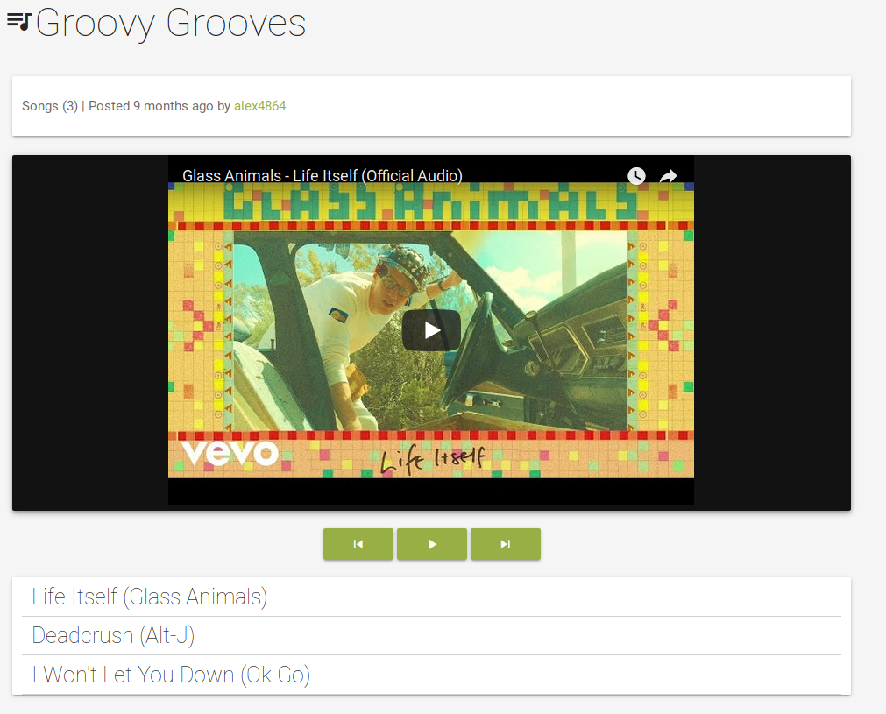
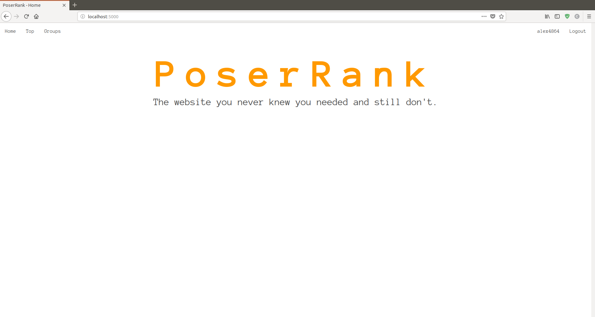

SounditA content-aggregation site for music discovery -- find new songs, discover new artists, make playlists, form communities, and spread the love of music. |
 |
PoserRankPoserRank is a whimsical take on social media. Find your friends, make groups, and call everyone out when they're being a poser. Watch leaderboards to track who the bigest poser in your friend group is! |
 |
WSI ServerWhole Slide Images (WSIs) are very high resolution reproductions of tissue samples viewed at high magnification. This web application employs open source tools to render WSIs in-browser, additionally providing a front-end to a suite of digital pathology tools on a potentially remote server. |